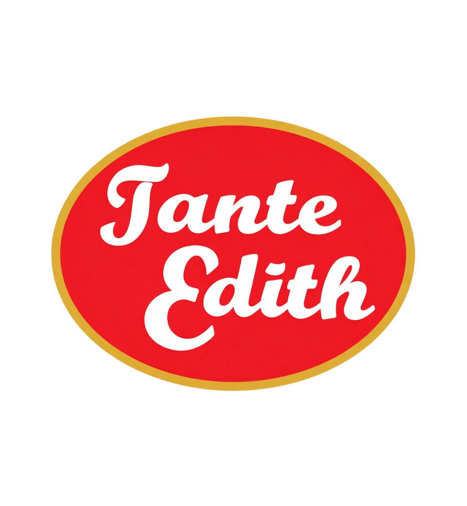
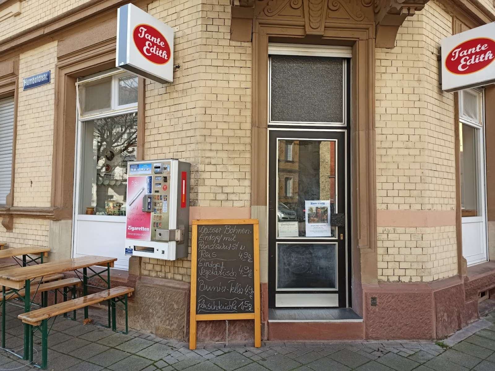
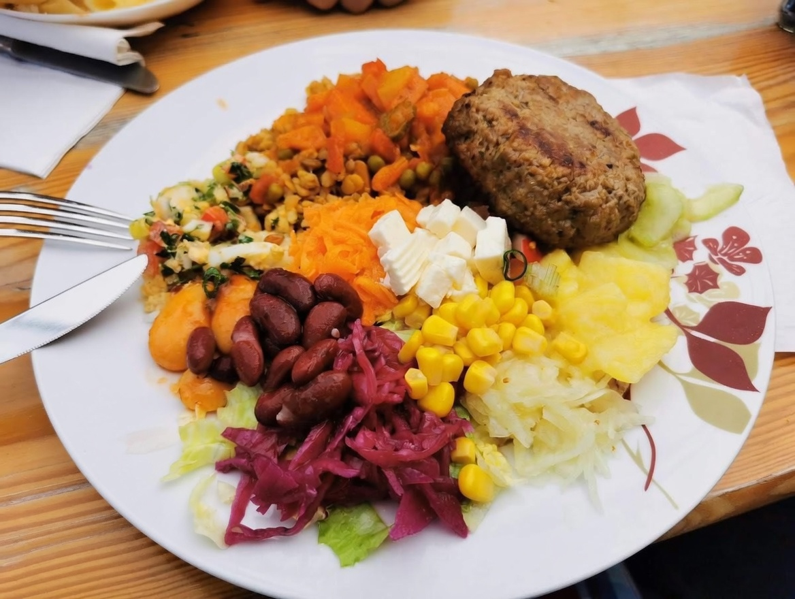
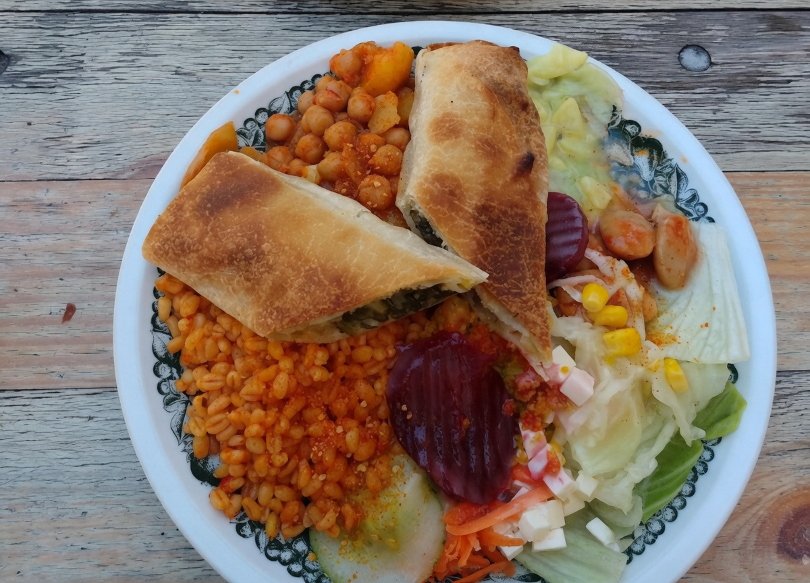
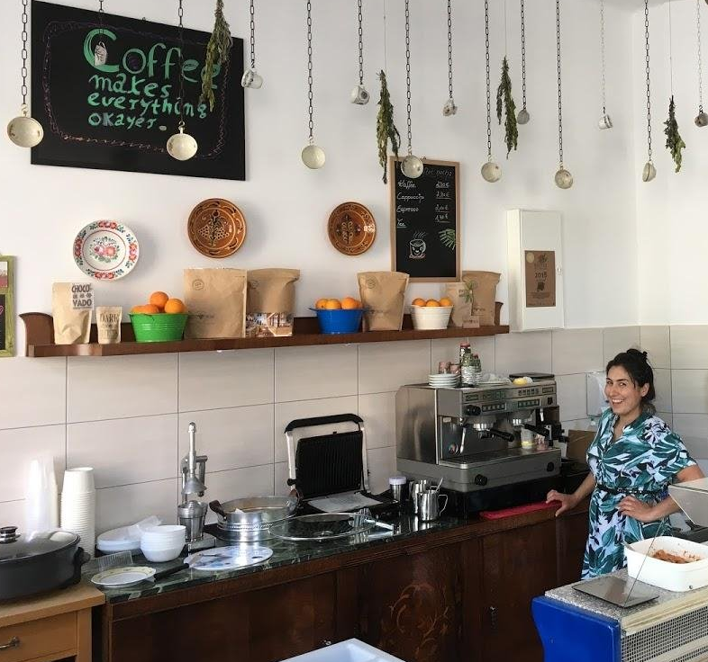
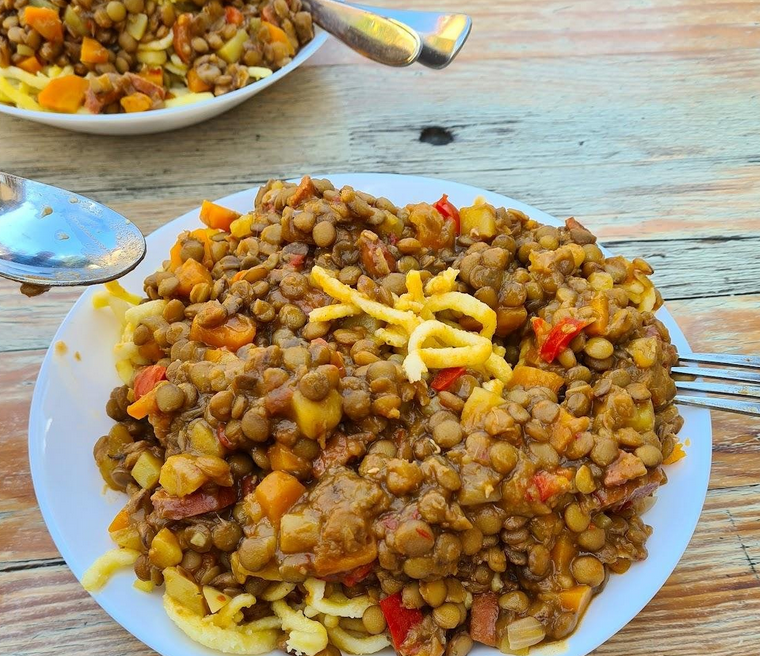
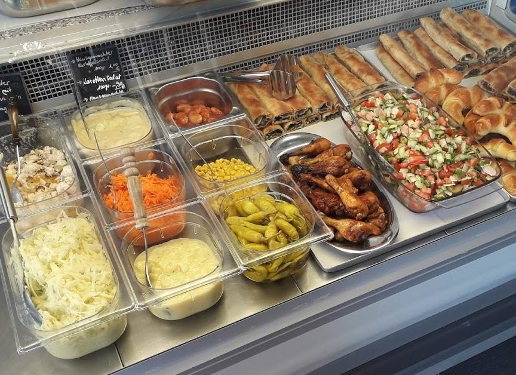

Hausgemachte Eintöpfe
Von Linsen bis Gemüse: herzhaft, sättigend und jeden Tag frisch.

Tante EdithHausmannskost in Karlsruhe
Bei Tante Edith gibt es werktags frisch gekochten Mittagstisch mit herzhaften Eintöpfen, Ofengerichten, Salaten und warmen Backwaren.

Von der Theke bis zum Mittagsteller.





Montag 11:30–14:30
Dienstag 11:30–14:30
Mittwoch 11:30–14:30
Donnerstag 11:30–14:30
Freitag 11:30–14:30
Samstag Geschlossen
Sonntag Geschlossen
Humboldtstraße 16, 76131 Karlsruhe
Mail: folgt
Telefon: folgt